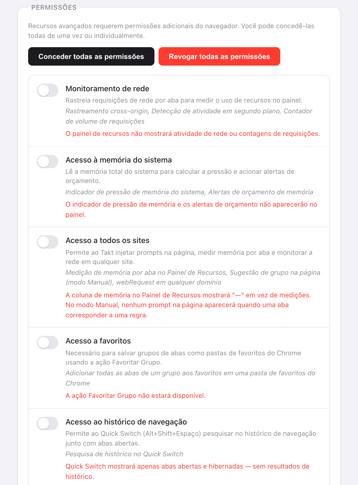

Resposta curta: o Takt não envia dados de navegação para lugar nenhum. Ele faz dois tipos de requisição de rede, e os dois estão listados abaixo.
- Verificação de licença no ExtensionPay: ao iniciar, a cada 15 minutos e quando você abre o popup.
- Sincronização com o Google Drive: só se você conectar (Premium).
- Sem conta, sem analytics, sem telemetria. O agrupamento por IA roda no modelo do Chrome, no dispositivo.
Por que eu deveria confiar numa extensão de abas?
Talvez você não deva, e isso é razoável. Em 2021, o Google removeu o The Great Suspender, uma extensão que suspendia abas, depois que apareceu código malicioso numa versão lançada após a venda da extensão. Os usuários tinham instalado algo útil, e uma atualização o voltou contra eles.
Um gerenciador de abas precisa ler as URLs das suas abas para funcionar. Então as perguntas úteis são: o que ele faz com elas, quem mais as recebe, e isso pode mudar sem você perceber? O resto desta página responde a essas perguntas sobre o Takt, com coisas que você mesmo pode conferir.
O que fica no meu computador?
Tudo o que o Takt sabe sobre a sua navegação fica no armazenamento de extensões do próprio Chrome:
- Regras, configurações e perfis em
chrome.storage.sync. - Sessões, abas hibernadas, contagens de correspondência das regras e o histórico de domínios por trás das sugestões de regras em
chrome.storage.local.
Uma ressalva: se a sincronização do Chrome estiver ativada, o próprio Chrome copia o chrome.storage.sync entre seus dispositivos pela sua conta do Google. Isso é um recurso do Chrome, não um servidor do Takt.
Quais servidores o Takt contata?
| Serviço | Quando | O que recebe |
|---|---|---|
| ExtensionPay (licença) | Ao iniciar, a cada 15 minutos, quando você abre o popup | Uma chave de licença aleatória. Nenhuma URL, nenhum dado de abas. |
| API do Google Drive | Só depois que você conecta o Drive. A cada 15 minutos se a sincronização automática estiver ativada. | Os arquivos de sincronização do próprio Takt, na pasta de app oculta do Drive |
| Login do Google | Quando você conecta ou desconecta o Drive | Ao conectar, uma consulta ao seu e-mail para mostrar qual conta está vinculada. Ao desconectar, um pedido para revogar o token de acesso do Takt. |
Um detalhe que vale saber: o ExtensionPay só cria essa chave de licença quando você abre pela primeira vez a página de upgrade ou de login. Até lá, a verificação não encontra chave nenhuma e termina sem fazer requisição de rede.
A sincronização com o Drive usa o escopo drive.appdata. O Takt pode ler e gravar os próprios arquivos numa pasta oculta e não consegue ver o resto do seu Drive. A sincronização com pasta, a outra opção de backup, grava numa pasta que você escolhe; quem faz qualquer envio é o seu próprio cliente de nuvem.
Mais duas coisas abrem uma página da web, e nenhuma delas é uma requisição em segundo plano. O link de avaliação abre a Chrome Web Store quando você clica nele. E, quando você desinstala, o Chrome abre uma página de feedback que recebe valores genéricos, como a versão, o plano e uma faixa do número de regras. A política de privacidade lista todos esses valores.
O agrupamento por IA roda no dispositivo?
Sim. O agrupamento com IA usa o modelo de linguagem integrado ao Chrome, que roda no seu computador. O Chrome baixa o modelo no primeiro uso, e o Takt mostra o progresso. Se o modelo não estiver disponível, o Takt agrupa por semelhança, também localmente.
Para ser exato sobre o que o modelo vê: o título de cada aba e, nas páginas que o Chrome deixa o Takt ler (o acesso a todos os sites concede isso), os primeiros 500 caracteres do texto visível. Esse texto vai para o modelo no seu computador e para nenhum outro lugar. Não existe servidor do Takt para onde enviá-lo.
O recurso de IA "Organize Similar Tabs" do próprio Chrome, que alguns guias ainda citam, rodava na nuvem, não no seu dispositivo, e o Google o desativou em 2025. Se você só quer arrumar as abas de vez em quando, os grupos de abas e a Economia de memória do Chrome podem bastar, sem extensão. O Takt é para regras que permanecem, bloqueio de duplicatas, hibernação e sessões, além disso.
Por que o Takt pede cada permissão?
Oito permissões são concedidas na instalação. Cada uma corresponde a um recurso:
| Permissão | Por quê |
|---|---|
tabs | Ler URLs e títulos das abas para aplicar suas regras |
tabGroups | Criar, nomear, colorir e recolher grupos |
activeTab | Agir sobre a aba atual quando você clica no popup |
storage | Salvar regras, configurações, sessões |
scripting | Mostrar o aviso de duplicata e a sobreposição do Quick Switch; ler o texto das páginas para o agrupamento por IA |
contextMenus | Itens do botão direito, como Hibernar esta aba |
notifications | Alertas, como os avisos de orçamento de memória |
alarms | Tarefas programadas: hibernação automática, agendamentos de perfis, a verificação de licença |
Todo o resto é opcional e fica desligado até um recurso precisar: webRequest, system.memory e o acesso a todos os sites para o Painel de recursos (o acesso a todos os sites também deixa o agrupamento por IA ler o texto das páginas), bookmarks para Favoritar Grupo, history para a pesquisa do Quick Switch e as sugestões de regras, downloads para a pesquisa do Quick Switch, identity para a sincronização com o Drive. Você pode revogar qualquer uma delas em Settings, ou configurar o Takt para nunca pedir.

Como posso conferir isso eu mesmo?
- Abra
chrome://extensionse ative o Modo do desenvolvedor. - No cartão do Takt, clique em service worker ao lado de "Inspecionar visualizações".
- Abra a guia Rede e continue navegando. Você deve ver só as requisições da tabela acima, mais o Takt lendo os próprios arquivos
chrome-extension://.
A política de segurança de conteúdo do Takt é script-src 'self'. Ele só pode rodar código empacotado na extensão, então não consegue buscar código novo num servidor. Qualquer mudança de comportamento precisa sair como uma nova versão na Chrome Web Store.
Do que isso não protege você
- Você ainda confia nas atualizações. O Chrome instala as novas versões automaticamente. Nenhuma política impede que uma versão futura mude; a guia Rede é como você perceberia.
- O ExtensionPay é um terceiro. Depois que existe uma chave de licença, ele vê a chave e, como qualquer servidor, o seu endereço IP.
- A permissão
tabsé ampla. O Takt consegue ler a URL e o título de todas as abas. É assim que as regras funcionam. O que importa é que isso fica no computador.
Um gerenciador de abas sem nenhum servidor para onde mandar seus dados.
Adicionar o Takt ao Chrome, grátisPerguntas frequentes
O Takt envia meu histórico de navegação ou as URLs das minhas abas para algum lugar?
Não. Regras, correspondências, sessões, abas hibernadas e sugestões ficam no armazenamento do Chrome, no seu computador. Os únicos dados que saem são a verificação de licença e, se você conectar, os arquivos de sincronização do Takt no seu próprio Google Drive.
O Takt precisa de uma conta?
Não. Não existe conta do Takt. O Premium (US$ 3/mês ou US$ 30/ano) é pago pelo ExtensionPay, que usa o Stripe.
O agrupamento por IA do Takt é feito na nuvem?
Não. Ele usa o modelo integrado ao Chrome, que roda no dispositivo. Sem o modelo, o Takt agrupa por semelhança, também localmente.
Por que o Takt precisa da permissão tabs?
Para ler a URL e o título de cada aba e compará-los com as suas regras. A correspondência acontece no navegador; nada é transmitido.
Qual a diferença para o The Great Suspender?
O The Great Suspender foi removido em 2021 depois que apareceu código malicioso numa versão lançada após a venda da extensão. A política de segurança de conteúdo do Takt só permite scripts empacotados na extensão, então qualquer mudança precisa sair como uma nova versão na Chrome Web Store, que você pode inspecionar.